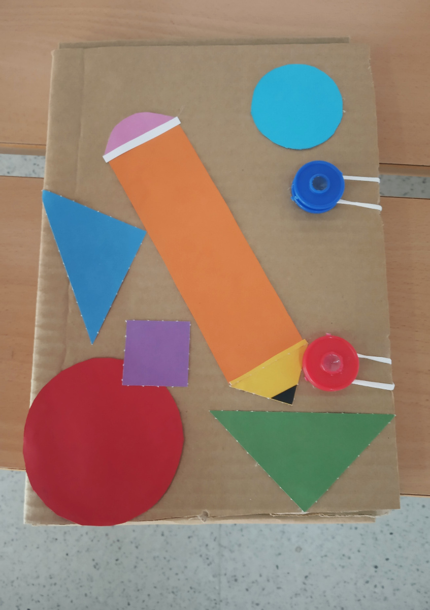

Centro de interés
Cada día generamos más y más residuos, sin darle una oportunidad a los materiales y objetos que nos rodean. Por lo que deben concienciarnos al respecto desde edades tempranas y aplicarlo en todos los ámbitos.
Cada día generamos más y más residuos, sin darle una oportunidad a los materiales y objetos que nos rodean. Por lo que deben concienciarnos al respecto desde edades tempranas y aplicarlo en todos los ámbitos.
El alumnado tendrá que enfrentarse al reto de crear una carpeta a partir de materiales reciclados.
Esta práctica tiene como objetivo principal que los estudiantes adquieran conocimientos y habilidades en el diseño y la construcción de objetos siguiendo el proceso de resolución de problemas tecnológicos, así como en el uso de herramientas y materiales reciclados de forma segura, adquiriendo el compromiso de reciclar y reutilizar siendo consecuente con los Objetivos de Desarrollo Sostenible. Deben por tanto:
-Conocer el proceso de resolución de problemas tecnológicos.
-Utilizar materiales y herramientas de forma segura y sostenible.
-Redactar documentación técnica y presentar su producto.
-Evaluar el producto final y reflexionar sobre el proceso de enseñanza-aprendizaje ofrecido en este proyecto.
Alumnado de 2º de Educación Secundaria Obligatoria (ESO), con edades comprendidas entre los 13 y 14 años.
Aprendizaje basado en proyectos
El Aprendizaje Basado en Proyectos (ABP o Project-based learning) es una metodología didáctica cuyo principal objetivo es la realización de un producto final que dé respuesta a un problema de la vida real.
Diseñar y construir una carpeta sostenible.

Se van a proponer una serie de de tareas que os ayudarán a alcanzar el producto final.
Tarea 1: Investigación
Tarea 2: Planificación
Tarea 3: Construcción
Tarea 4: Documentación
Tarea 5: Exposición
Para que de un solo vistazo se pueda visualizar el esquema de trabajo, las tareas, el agrupamiento y temporalización de las mismas nos ayudaremos de la siguiente línea del tiempo creada en Canvas.Línea del tiempo de Proyecto Carpeta sostenible
Obra publicada con Licencia Creative Commons Reconocimiento Compartir igual 4.0